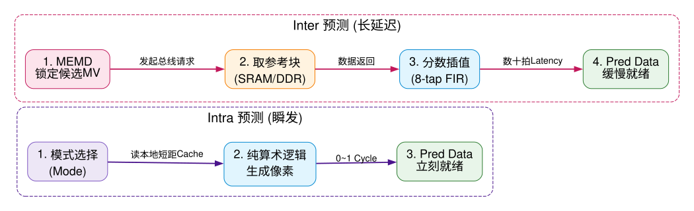
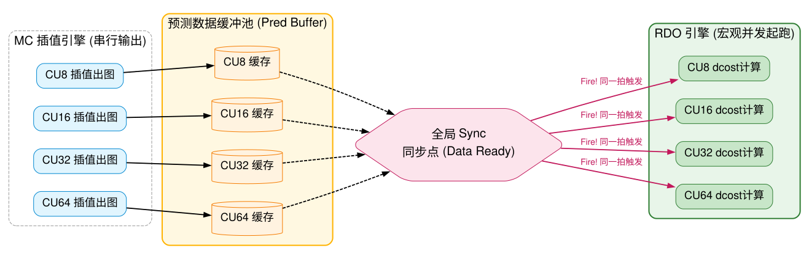
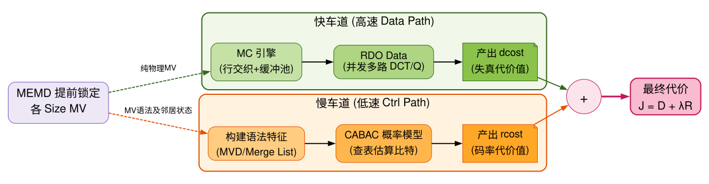

Inter RDO 架构优化：从串行插值到并发流水线
Inter RDO Architecture: Eradicating Step-Delay
策略总览：本文档剖析了在视频硬件编码器中，为何 Inter 预测的 RDO (Rate Distortion Optimization) 流水线会产生随着 CU size 变大而导致的阶梯式延迟（Step-Delay）。在 MEMD (Motion Estimation Mode Decision) 已提前锁定所有候选 MV 的前提下，我们将重点探讨如何突破 分数像素插值引擎（Fractional Interpolation） 的 PPA 面积瓶颈，实现所有 CU Size 的 dcost (Distortion Cost) 近乎同时并发启动的终极流水线解耦方案。
1. 核心架构痛点解析：阶梯式 Delay 的物理根源
在设计高效的硬件 RDO 时，我们需要理解 Intra 与 Inter 产生数据的物理时序鸿沟。Intra 依赖本地短路生成，而 Inter 依赖外部总线访存（Fetch）与重型滤波计算。

1.1 面积与吞吐的生死权衡：插值的串行复用
在确认了 MEMD 已前置锁定各层级 MV 后，导致 dcost 无法并发的元凶是 分数插值引擎的时分复用 (Time-Multiplexing)。为严控 PPA，硬件通常只有一组乘加引擎，必须算完 1/2 像素，缓存，再算 1/4 像素。这产生了阶梯状的物理时序阻塞。
硬件不可能为 1/2 和 1/4 各配备独立的巨大乘法树。引擎被单一任务锁定，直接粉碎了后续 RDO 同时起跑的规划。
2. 硬件架构破局策略：在 PPA 受限下的解法
2.1 行级交织复用 (Row-level Interleaving)
为了打破“算出整个大块 1/2 才去算 1/4”的巨大时序鸿沟，我们引入微观时间片复用策略（Time-Slicing）。
依靠插入几个极低代价的 Line Buffer，使得 1/4 像素紧随 1/2 像素后一拍被吐出。将原本上百拍的“块级阻塞”压缩为只有几拍波动的“微小锯齿”。
2.2 预测缓冲池隔离机制 (Pred Buffer Sync-Fire)
无论如何交织，数据产出仍有先后。为了让 RDO 数据路径（Data Path）实现宏观上的“所有 CU Size 齐头并进”，我们必须将时间差异隔绝在 RDO 之外。

2.3 终极愿景：数据与控制流极致解耦 (Data-Control Decoupling)
结合 MEMD 的前置预选，我们最终构建出一个近乎完美的解耦架构。物理计算（像素插值）走快车道，语法计算（CABAC）走慢车道。

在这个架构中，高速数据流利用 行交织 榨干插值引擎效率，利用 缓冲池齐发 让 RDO 算盘全开。当漫长的 dcost 算完时，慢速车道计算的 rcost 刚好赶到，顺畅无阻地完成所有 CU 的判决。